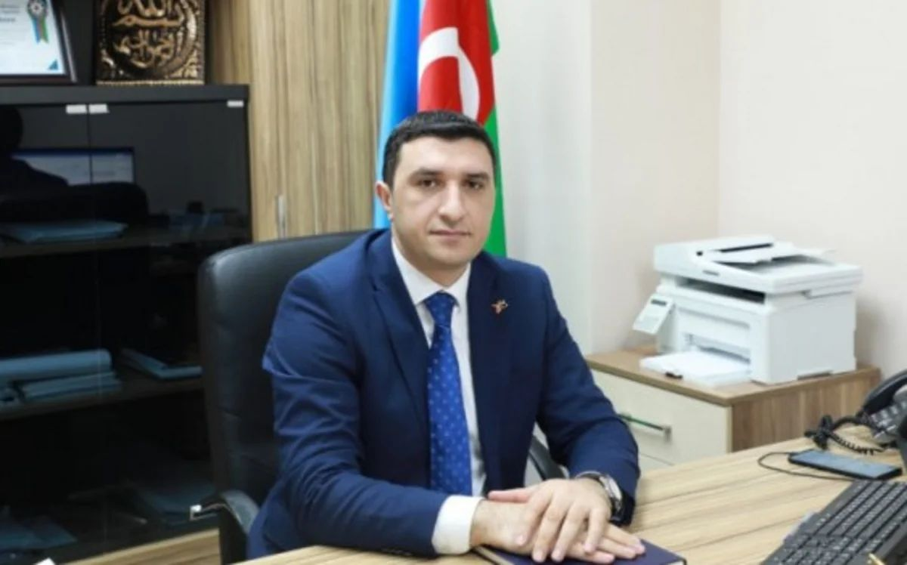
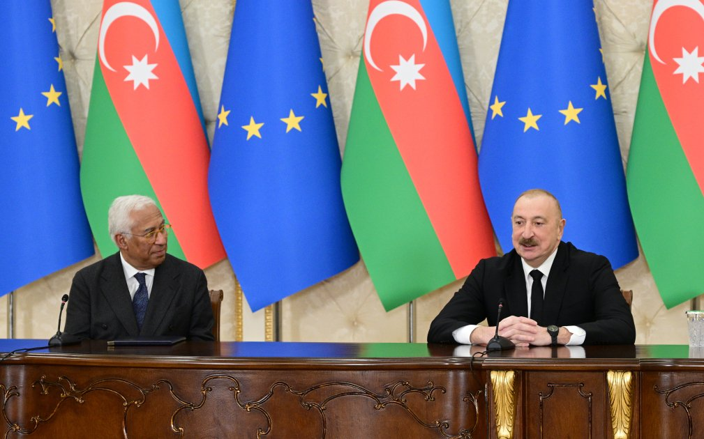

Gələn tədbirlər
Yaxınlaşan tədbirlər və görüşlərimiz

Beynəlxalq biznes forumu çərçivəsində strateji əməkdaşlıq imkanları müzakirə olunacaq.
Beynəlxalq biznes forumu çərçivəsində strateji əməkdaşlıq imkanları, investisiya layihələri və inkişaf proqramları müzakirə olunacaq. Forumda 10 ölkədən 100+ nümayəndə iştirak edəcək.
- 10 ölkədən nümayəndələrin iştirakı
- Strateji əməkdaşlıq müzakirələri
- İnvestisiya imkanlarının təqdimatı
- Networking sessiyaları

Korporativ təlim mərkəzimizdə növbəti peşəkar inkişaf proqramı keçiriləcək.
Peşəkar inkişaf proqramı çərçivəsində strateji düşüncə, layihə idarəçiliyi və komanda liderliyi mövzularında intensiv təlimlər keçiriləcək.
- 3 günlük intensiv təlim proqramı
- Beynəlxalq sertifikat imkanı
- Praktiki case-study və simulyasiyalar
- 50 iştirakçı yer

Qida təhlükəsizliyi və keyfiyyət standartları üzrə beynəlxalq seminar keçiriləcək.
Qida təhlükəsizliyi və keyfiyyət standartları üzrə beynəlxalq seminar çərçivəsində HACCP, ISO 22000 və BRCGS standartları müzakirə olunacaq.
- HACCP və ISO 22000 standartları
- Beynəlxalq ekspertlərin iştirakı
- Praktiki workshop-lar
- Sertifikatlaşdırma imkanı

Strateji planlaşdırma və idarəetmə üzrə praktiki workshop keçiriləcək.
Strateji planlaşdırma və idarəetmə üzrə praktiki workshop çərçivəsində real biznes case-ləri üzərində işləniləcək.
- Real biznes case-ləri
- Strateji planlaşdırma alətləri
- Qrup işləri və müzakirələr
- 30 iştirakçı yer

Aqrar sektorun innovasiyaları və dayanıqlı inkişafı üzrə panel müzakirə keçiriləcək.
Aqrar sektorun innovasiyaları və dayanıqlı inkişafı üzrə panel müzakirə çərçivəsində yeni texnologiyalar və metodlar təqdim olunacaq.
- Aqrar innovasiyaların təqdimatı
- Dayanıqlı inkişaf strategiyaları
- Beynəlxalq təcrübə mübadiləsi
- 60 iştirakçı yer
Son xəbərlər
İş ortamı, tədbirlər və görüşlərimiz

Şirkətin illik strateji iclasında Elxan Mikayılov yeni baş direktor vəzifəsinə təyin edildi.
15 may 2026-cı ildə keçirilən ASR Group-un illik strateji iclasında şirkətin rəhbərlik strukturunda mühüm dəyişiklik baş verdi. Dövlət idarəçiliyi və strateji islahatlar sahəsində 20 illik təcrübəyə malik Elxan Mikayılov baş direktor vəzifəsinə təyin edildi.
- 20+ illik dövlət idarəçiliyi təcrübəsi
- Strateji islahatlar və transformasiya sahəsində ekspert
- 50 nəfərlik komandaya rəhbərlik edəcək
- 2026-2030 strateji inkişaf planının hazırlanması
50-dən çox yerli və beynəlxalq mütəxəssisin iştirak etdiyi illik konsaltinq forumu uğurla başa çatdı.
Bakıda keçirilən Beynəlxalq Konsaltinq Forumu 2026-da 8 ölkədən 50+ nümayəndə iştirak etdi. Forum çərçivəsində strateji idarəetmə, qida təhlükəsizliyi və davamlı inkişaf mövzularında panel müzakirələr aparıldı.
- 8 ölkədən nümayəndələrin iştirakı
- 12 panel müzakirə və 3 workshop
- 2 yeni əməkdaşlıq memorandumu imzalandı
- 200+ iştirakçı qonaq qəbul edildi

Avropa İttifaqı nümayəndə heyəti ilə strateji əməkdaşlıq çərçivəsində yeni layihələr müzakirə edildi.
Avropa İttifaqının Azərbaycan nümayəndə heyəti ilə keçirilən görüşdə qarşılıqlı maraq doğuran 5 yeni layihə müzakirə edildi. Əsas diqqət qida təhlükəsizliyi, aqrar inkişaf və dövlət idarəçiliyi sahələrinə yönəldilib.
- 5 yeni birgə layihənin müzakirəsi
- Qida təhlükəsizliyi sahəsində texniki dəstək
- Aqrar sektorun modernləşdirilməsi proqramı
- 2.5 milyon EUR büdcəli layihə təsdiq edildi
Şirkətimizin komandası 15 yeni peşəkar mütəxəssislə daha da gücləndi.
2026-cı ilin ilk rübündə komandamıza 15 yeni peşəkar qatıldı. Bu mütəxəssislər hüquq, iqtisadiyyat, kənd təsərrüfatı və səhiyyə sahələrində beynəlxalq təcrübəyə malikdirlər.
- 5 hüquq mütəxəssisi (qanunvericilik)
- 4 iqtisadçı (texniki-iqtisadi təhlil)
- 3 aqrar mütəxəssis (bitkiçilik, heyvandarlıq)
- 3 səhiyyə eksperti (farma, tibb texnologiyaları)
Korporativ təlim mərkəzimizdə növbəti peşəkar inkişaf proqramı keçirildi.
ASR Təlim Mərkəzində keçirilən "Peşəkar İnkişaf və Liderlik" proqramı 5 gün davam etdi. Proqram çərçivəsində strateji düşüncə, layihə idarəçiliyi və komanda liderliyi mövzularında intensiv təlimlər keçirildi.
- 5 günlük intensiv təlim proqramı
- 40 iştirakçıya beynəlxalq sertifikat verildi
- Strateji düşüncə və liderlik modulları
- Praktiki case-study və simulyasiyalar
Video icmallar
Tədbirlərimizdən və layihələrimizdən video görüntülər

Beynəlxalq forum 2026
5 Fevral 2026
Peşəkar inkişaf proqramı
8 Noyabr 2025
Komanda görüşü 2026
12 Mart 2026
Strateji planlaşdırma workshop-u
15 May 2026
Aqrar innovasiyalar paneli
20 İyul 2026Foto qalereya
Tədbirlərimizdən və layihələrimizdən foto görüntülər
Forum açılış mərasimi
5 Fevral 2026
Təlim proqramı
8 Noyabr 2025
Komanda görüşü
12 Mart 2026
İş görüşləri
15 May 2026